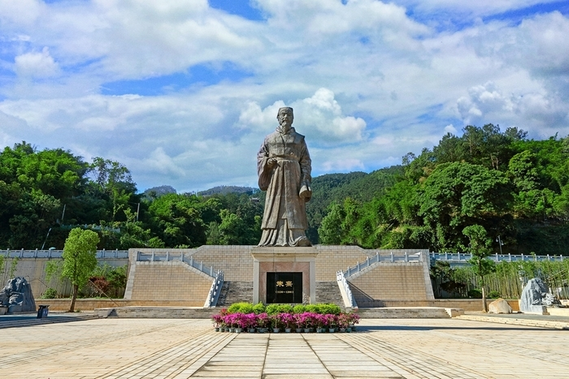

尤溪素有“闽中明珠”之称，也被称为“中国金柑之乡”“中国绿竹之乡”“中国竹子之乡”“中国油茶之乡”“中国革基布名城”“朱子理学文化名城”2010年被授予“千年古县”称号。2013年7月23日，中央党史研究室正式确认尤溪县属于原中央苏区范围。
始建县于唐开元29年（741），隶属福州。南唐保大六年（948 ）改隶剑州（州治在南平）。宋太平兴国四年（979）起，剑州改称南剑州，至元十五年（1278）南剑州改称南剑路，延祐元年（1314）南剑路改称延平路。 [4]
县人民政府驻城关镇，全县面积3463平方千米辖9个镇、6个乡：城关镇、梅仙镇、西滨镇、洋中镇、新阳镇、管前镇、西城镇、尤溪口镇、坂面镇、联合乡、汤川乡、溪尾乡、中仙乡、台溪乡、八字桥乡。以及250个行政村、12居委会。县人民政府驻城关镇，以“尤溪八景”著称。 [3]